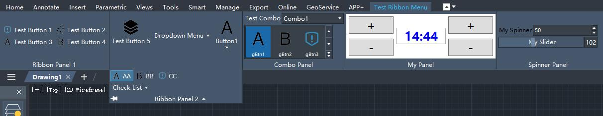
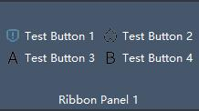
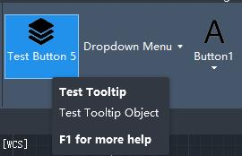
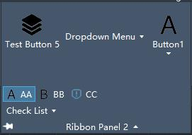
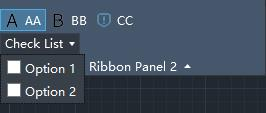
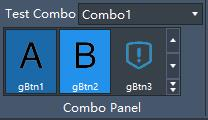
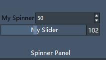

The .NET framework provides interfaces for compiling Ribbon bars, allowing the creation and editing of custom Ribbon content.
Note: The Ribbon bars generated by the following code are temporary. They will not appear upon next startup unless the same code is executed again.

- Preparation
- Creating Ribbon Tabs and Panels
- Creating Row Panels (RibbonRowPanel) and Buttons
- Ribbon Button Tooltips
- Dropdown Panels
- Radio Button Groups (RibbonRadioButtonGroup) and Checkbox Buttons (RibbonChecklistButton)
- Spinner (RibbonSpinner) and Slider (RibbonSlider)
Preparation
First, add references to ZcWindows.dll and ZdWindows.dll in the project. Then include the following in your code:
using ZwSoft.Windows;
using ZwSoft.Internal.Windows;
Additionally, add the following method to convert icon resources into types usable by Ribbon items:
[DllImport("gdi32.dll")]
public static extern bool DeleteObject(IntPtr hObject);
public ImageSource ToBitmapSource(Bitmap bitmap)
{
IntPtr intPtr = bitmap.GetHbitmap();
try
{
ImageSource imageSource = SW.Interop.Imaging.CreateBitmapSourceFromHBitmap(intPtr, IntPtr.Zero, SW.Int32Rect.Empty, BitmapSizeOptions.FromEmptyOptions());
return imageSource;
}
catch (System.Exception ex)
{
Application.DocumentManager.MdiActiveDocument.Editor.WriteMessage(ex.Message);
}
finally
{
DeleteObject(intPtr);
}
return null;
}
Creating Ribbon Tabs and Panels
Ribbon Tabs serve as the base for hosting all panels, while panels are used to organize different controls. Multiple panels can be created to categorize controls by functionality.
// Get the CAD Ribbon
RibbonControl ribbonCtrl = ComponentManager.Ribbon;
// Add a Tab
RibbonTab tab1 = new RibbonTab()
{
Title = "Test Ribbon Menu",
Name = "Test Ribbon Menu",
Id = "ID_TAB1",
};
ribbonCtrl.Tabs.Add(tab1);
tab1.IsActive = true;
// Add Panel 1
RibbonPanelSource panelSource1 = new RibbonPanelSource()
{
Name = "Ribbon Panel 1",
Title = "Ribbon Panel 1",
};
RibbonPanel panel1 = new RibbonPanel();
panel1.Source = panelSource1;
tab1.Panels.Add(panel1);
// Add Panel 2
RibbonPanelSource panelSource2 = new RibbonPanelSource()
{
Name = "Ribbon Panel 2",
Title = "Ribbon Panel 2",
};
RibbonPanel panel2 = new RibbonPanel();
panel2.Source = panelSource2;
tab1.Panels.Add(panel2);
Creating Row Panels (RibbonRowPanel) and Buttons
Row panels can arrange multiple buttons in rows, making full use of vertical space.

#region RibbonRowPanel Sample
// Create a Row Panel
RibbonRowPanel rowPanel1 = new RibbonRowPanel();
// Create Buttons
RibbonButton btn1 = new RibbonButton()
{
Name = "btn1",
Text = "Test Button 1",
Description = "Test Button 1",
ShowText = true,
Size = RibbonItemSize.Standard,
ShowImage = true,
Image = ToBitmapSource(Properties.Resources.c_small),
CommandHandler = new MyCmdHandler()
};
rowPanel1.Items.Add(btn1);
RibbonButton btn2 = new RibbonButton()
{
Name = "btn2",
Text = "Test Button 2",
Description = "Test Button 2",
ShowText = true,
Size = RibbonItemSize.Standard,
ShowImage = true,
Image = ToBitmapSource(Properties.Resources.d_small),
CommandHandler = new MyCmdHandler()
};
rowPanel1.Items.Add(btn2);
// Line break
rowPanel1.Items.Add(new RibbonRowBreak());
RibbonButton btn3 = new RibbonButton()
{
Name = "btn3",
Text = "Test Button 3",
Description = "Test Button 3",
ShowText = true,
Size = RibbonItemSize.Standard,
ShowImage = true,
Image = ToBitmapSource(Properties.Resources.a_small),
CommandHandler = new MyCmdHandler()
};
rowPanel1.Items.Add(btn3);
RibbonButton btn4 = new RibbonButton()
{
Name = "btn4",
Text = "Test Button 4",
Description = "Test Button 4",
ShowText = true,
Size = RibbonItemSize.Standard,
ShowImage = true,
Image = ToBitmapSource(Properties.Resources.b_small),
CommandHandler = new MyCmdHandler()
};
rowPanel1.Items.Add(btn4);
panelSource1.Items.Add(rowPanel1);
#endregion
And the definition of the command callback class MyCmdHandler is as follows:
public class MyCmdHandler : System.Windows.Input.ICommand
{
public bool CanExecute(object parameter) {
return true;
}
public event EventHandler CanExecuteChanged;
public void Execute(object parameter) {
Document doc = acApp.DocumentManager.MdiActiveDocument;
if (parameter is RibbonButton) {
RibbonButton button = parameter as RibbonButton;
doc.Editor.WriteMessage("\nRibbonButton Executed: " + button.Text + "\n");
}
}
}
Ribbon Button Tooltips
A tooltip pops up when hovering over a button. Expanded content appears after a few seconds.

#region RibbonToolTip Sample
RibbonButton btn5 = new RibbonButton()
{
Name = "btn5",
Text = "Test Button 5",
Description = "Test Button 5",
ShowText = true,
Size = RibbonItemSize.Large,
ShowImage = true,
Orientation = SW.Controls.Orientation.Vertical,
Image = ToBitmapSource(Properties.Resources.e_small),
LargeImage = ToBitmapSource(Properties.Resources.e_large),
};
//Button tooltip content
RibbonToolTip toolTip = new RibbonToolTip()
{
Title = "Test Tooltip",
Content = "Test Tooltip Object",
Command = "ribbontooltip",
ExpandedContent = "Expanded Tooltip Content",
ExpandedImage = ToBitmapSource(Properties.Resources.e_large),
};
btn5.ToolTip = toolTip;
panelSource2.Items.Add(btn5);
#endregion
Drop-down Panel
The drop-down panel is not expanded by default and requires user interaction to reveal its content. It can be used to hide less frequently used functionality buttons.

//After adding a RibbonPanelBreak to the RibbonPanelSource object, any subsequent Ribbon controls added to the panel will be displayed in the drop-down panel.
//Only one RibbonPanelBreak can be added per RibbonPanelSource. Adding multiple instances will only recognize the first one.
panelSource2.Items.Add(new RibbonPanelBreak());
RibbonRadioButtonGroup and RibbonChecklistButton
RibbonToggleButton grouped via RibbonRadioButtonGroup for radio selection. RibbonChecklistButton generates a drop-down menu for multi-selection.

#region RibbonRadioButtonGroup Sample
//Radio button group
RibbonRadioButtonGroup radioBtnGroup = new RibbonRadioButtonGroup()
{
Name = "radioBtnGroup",
Text = "Checkbox Group",
ShowText = true,
};
//Radio buttons
RibbonToggleButton toggleBtn1 = new RibbonToggleButton()
{
Name = "toggleBtn1",
Text = "AA",
ShowText = true,
IsChecked = true,
Image = ToBitmapSource(Properties.Resources.a_small),
ShowImage = true,
};
radioBtnGroup.Items.Add(toggleBtn1);
RibbonToggleButton toggleBtn2 = new RibbonToggleButton()
{
Name = "toggleBtn2",
Text = "BB",
ShowText = true,
IsChecked = false,
Image = ToBitmapSource(Properties.Resources.b_small),
ShowImage = true,
};
radioBtnGroup.Items.Add(toggleBtn2);
RibbonToggleButton toggleBtn3 = new RibbonToggleButton()
{
Name = "toggleBtn3",
Text = "CC",
ShowText = true,
IsChecked = false,
Image = ToBitmapSource(Properties.Resources.c_small),
ShowImage = true,
};
radioBtnGroup.Items.Add(toggleBtn3);
panelSource2.Items.Add(radioBtnGroup);
#endregion
#region RibbonChecklistButton
//Multi-selection list
RibbonChecklistButton checkList = new RibbonChecklistButton() {
Text = "Multi-select List",
ShowText = true
};
RibbonButton checkBtn1 = new RibbonButton()
{
Text = "Option 1"
};
checkList.Items.Add(checkBtn1);
RibbonButton checkBtn2 = new RibbonButton()
{
Text = "Option 2"
};
checkList.Items.Add(checkBtn2);
panelSource2.Items.Add(checkList);
#endregion
RibbonCombo and RibbonGallery
RibbonCombo and RibbonGallery display multiple options, differentiating from drop-down lists by showcasing the currently selected item.

RibbonPanelSource rbPanelSource = new RibbonPanelSource()
{
Title = "Combo Panel",
Name = "Combo Panel"
};
RibbonPanel rbPanel = new RibbonPanel()
{
Source = rbPanelSource,
};
tab.Panels.Add(rbPanel);
RibbonRowPanel rbRowPanel = new RibbonRowPanel();
#region RibbonCombo Sample
//Combo box
RibbonCombo rbCombo = new RibbonCombo()
{
Text = "Test Combo",
ShowText = true
};
RibbonButton combo1 = new RibbonButton()
{
Text = "Combo1",
ShowText = true,
};
rbCombo.Items.Add(combo1);
RibbonButton combo2 = new RibbonButton()
{
Text = "Combo2",
ShowText = true,
};
rbCombo.Items.Add(combo2);
rbRowPanel.Items.Add(rbCombo);
#endregion
rbRowPanel.Items.Add(new RibbonRowBreak());
#region RibbonGallery Sample
//Gallery control
RibbonGallery rbGallery = new RibbonGallery()
{
Text = "Test Gallery",
DisplayMode = GalleryDisplayMode.Window,
};
RibbonButton gBtn1 = new RibbonButton()
{
Text = "gBtn1",
LargeImage = ToBitmapSource(Properties.Resources.a_large),
};
rbGallery.Items.Add(gBtn1);
RibbonButton gBtn2 = new RibbonButton()
{
Text = "gBtn2",
LargeImage = ToBitmapSource(Properties.Resources.b_large),
};
rbGallery.Items.Add(gBtn2);
rbRowPanel.Items.Add(rbGallery);
#endregion
wei'tiaoweitiao
rbPanelSource.Items.Add(rbRowPanel);
RibbonSpinner and RibbonSlider
Both RibbonSpinner and RibbonSlider allow setting value ranges and step increments.

RibbonPanelSource rbPanelSource = new RibbonPanelSource()
{
Title = "Spinner Panel",
Name = "Spinner Panel"
};
RibbonPanel rbPanel = new RibbonPanel()
{
Source = rbPanelSource,
};
tab.Panels.Add(rbPanel);
#region RibbonSpinner Sample
//Spinner control
RibbonSpinner spinner = new RibbonSpinner()
{
Name = "rbSpinner",
Text = "My Spinner",
ShowText = true,
Minimum = 1,
Maximum = 100,
Change = 5,
Value = 50,
};
rbPanelSource.Items.Add(spinner);
#endregion
rbPanelSource.Items.Add(new RibbonRowBreak());
#region RibbonSlider Sample
//Slider control
RibbonSlider slider = new RibbonSlider()
{
Name = "rbSlider",
Text = "My Slider",
ShowText = true,
Minimum = 0,
Maximum = 255,
Value = 100,
TextBox1Visibility = SW.Visibility.Visible,
TextBox1Editable = true,
};
rbPanelSource.Items.Add(slider);
#endregion
To restrict the input value of the text box for the slider, a ValueConverter needs to be created to handle out-of-range values, then bind it to the corresponding slider control.
... // Add after creating the slider control code for binding
Binding binding = slider.ValueBinding as Binding;
binding.Converter = new ValueConvert();
slider.TextBox1TextBinding = binding;
...
// Value conversion, limiting out-of-range values between 0-255
public class ValueConvert : IValueConverter
{
public object Convert(object value, Type targetType, object parameter, CultureInfo culture)
{
if (value == null)
return SW.DependencyProperty.UnsetValue;
int res = (int)(double)value;
if (res < 0)
res = 0;
if (res > 255)
res = 255;
return res;
}
public object ConvertBack(object value, Type targetType, object parameter, CultureInfo culture)
{
return value;
}
}
Implementation Code
Please refer to the .Net sample project code: ZwDotNetGuide/AddRibbon